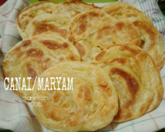

Bahan-bahan:
- 250gr tepung terigu
- 1 butir telur
- 3 sdm margarin, lelehkan
- 100 ml air hangat
- 2 sdm susu bubuk (optional)
- 1/2 sdt garam
- margarin leleh untuk olesan
- minyak untuk merendam
Langkah-langkah
- Campur semua bahan roti jadi satu

- Uleni sampai kalis(aku pakai tangan) jangan takut jika adonan lengket ya, lumuri tangan sesekali dg tepung (tapi jangan menambahkan dengan tepung) uleni terus sampai adonan kalis.
- Kalisnya adonan canai tidak sekalis adonan roti ya, kira2 seperti ini sudah cukup.